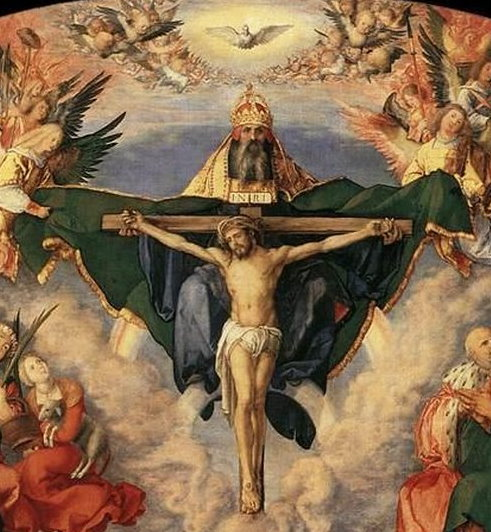

“DERRADEIRAS PALAVRAS”
Santo Agostinho com sua profunda e generosa argumentação nos coloca diante do imenso e humanamente indecifrável Mistério Divino. Assunto sublime e apaixonante, mas que nenhum dos muitos teólogos e autoridades religiosas competentes, fundamentados nos seus profundos conhecimentos que lhes colocaram em evidencia na História da Igreja tiveram a capacidade para explicá-lo. Significa dizer que é um Mistério estritamente reservado ao infinito Poder do CRIADOR. Somente lá na Eternidade Feliz, NOSSO SENHOR misericórdia infinita permite e concede aos espíritos puros que desfrutam dos bens eternos, também conhecerem e apreciarem embevecidos este maravilhoso, encantador e imenso Mistério de DEUS.
Assim sendo, todos nós que estamos no mundo de passagem, cumprindo ardorosamente nossa missão de cada dia, devemos acolher esta realidade até com certa alegria e muito amor, considerando-a como um convite dirigido particularmente a cada um de nós, como verdadeiramente é. E com este pensamento, devemos seguir a experiência e o exemplo dos mais sábios e inteligentes, prostrando-nos de joelhos diante do DEUS DA VIDA, e com sinceridade no coração agradecermos o dom da nossa própria existência; e dedicadamente amando, louvando, adorando e rezando com respeito e ardor, agradecermos fervorosamente e com solicitude, a incomparável bondade do SENHOR, que com o nosso nascimento, nos oferece alcançarmos o Paraíso Divino para desfrutarmos de todos os bens, de todos os segredos, dos mistérios mais impressionantes, e de uma felicidade sem fim.
"IMAGENS RELIGIOSAS"



"UM CONVITE"
Este Site foi construído pelo APOSTOLADO DOS SAGRADOS CORAÇÕES. Clique aqui ou no endereço abaixo para visitar o nosso PORTAL. Nele encontrará uma apreciável quantidade de Sites sobre o CRIADOR, o ESPÍRITO SANTO, JESUS DE NAZARÉ, sobre NOSSA SENHORA, os SANTOS ANJOS e Sites que apresentam a Vida e Obra de diversos SANTOS. Todos eles elaborados com muito amor e dedicação, fundamentados na Sagrada Escritura, na Tradição Cristã, na Vida e Obra dos Santos e nas Manifestações Sobrenaturais, sobretudo, com a intenção de informar a Verdade.
http://www.apostoladosagradoscoracoes.com/
"E-MAIL"
Desejando comunicar-se conosco, por favor utilize o E-mail abaixo:

"FIRMAS QUE DIVULGAM O SITE"